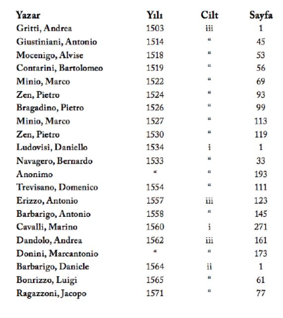
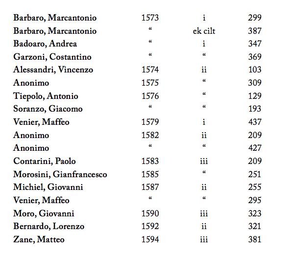

Metinlerin Kaynakları ve Kısaltmalar
* ile işaretli olanlarda resim vardır. 16. yüzyıl seyahatnâmeleri için en geniş ve kapsamlı kaynakça için bkz.: Stephane Yerasimos, Les Voyages dans l ’Empire Ottoman (XIV ’e XVI ’e siècles) Bibliographie, Itinéraire et Inventaire des Lieux Habités, Ankara 1991.
ALBERTI Eugenio Alberti, Relazioni degli ambasciatori Veneti al Senato, 3. seri 3 cilt+ek cilt, Floransa 1840-1863.
Venedik Bailolarının ve olağanüstü temsilcilerin Venedik Senatosu ’na gönderdikleri raporların derlemesi.


ÂLİ Gelibolulu Mustafa Âli, Mevâidü ’n-Nefâis fî Kavâ idi ’l Mecâlis (Görgü ve Toplum Kuralları Üzeride Ziyâfet Sofraları), tıpkıbasım y. hz. M. Cavid Baysun, İstanbul 1956.
Gelibolulu Mustafa Âli (1541-1600), çağının ünlü bir şairi, tarihçisi, yazarı ve ahlâkçısıdır. Yukarıda adı verilen eseri, zamanın günlük yaşamını, davranışlarını, yemeklerini, müziğini, eğlencelerini, kötülüklerini vb. anlatan değerli bir eserdir. Eseri daha bir eşsiz kılan, yazarın yansız ve eleştirel yaklaşımıdır.
L ’ALLEGREZZE L ’allegrezze fatte in Constantinopoli per il Ritaglio di Sultan Mehemeth figlio di Sultan Amorath Imperatore de Turchi l ’anno 1582, Ms. London, British Library, Royal 14 A. XIII, f, 44-56. 1582 ’de III. Murad ’ın oğlu III. Mehmed ’in sünnet düğününü anlatıyor.
AR Ahmet Refik, On Altıncı Asırda İstanbul Hayatı (1553-1591), İstanbul 1935
Tanınmış tarihçi Ahmet Refik ’in seçip yayımladığı, avlanmadan esir pazarındaki alışverişe kadar İstanbul ’daki günlük yaşamı düzenleyen Dîvân ’dan çıkmış kararlar.
AUSTELL Henry Austell, “The voyage of Master Henry Austell by Venice and thence to Ragusa over land, and so to Constantinople...” bkz. Richard Hakluyt, The second volume of the principal navigations, voyages, traffiques and discoveries of the English nation made by sea or overland, to the South and Southeast parts of the World... London, 1599, s. 194-198.
İngiliz Henry Austell, 1585 ’te Türkiye ’ye yaptığı yolculuğu kısaca anlatmaktadır.
BAUDIER Michel Baudier (de Languedoc) Histoire Générale du serrail et de la Cour du Grand Seigneur des Turcs, Lyon, 1652.
BASSANO Luigi Bassano, I Costumi et I Modi Particolari della vita de “Turchi...”, Roma, 1545 (tıpkıbasım München, 1963, y. hz. Franz Babinger).
Bassano da Zara hakkında çok az bilgi vardır. Babası Bassano del Grappa, Veneto bölgesinde doğmuş ve daha sonra Zara’ya (Zadar) yerleşmiştir. Oğlu 1510 civarında doğmuş ve kitabında yazılanlara dayanarak denebilir ki 1537 ilâ 1540 yılları arasında Türkiye ’de yaşamıştır. 1541 ’de İtalya ’ya dönmüş ve Roma ’da Kardinal Rudolfo Pio di Carpi ’nin hizmetine girmiştir. Kitabı, Kanûnî Sultan Süleyman dönemindeki İstanbul ’da günlük yaşam üzerine ilginç bilgiler içermektedir. Söz konusu kitap ilk olarak 1545 ’te Costumi ed i modi particolari della vita de ’ Turchi adıyla Roma ’da yayımlanmıştır. Biz burada Franz Babinger tarafından yayıma hazırlanan 1963 tıpkıbasımını kullandık.
BELON Pierre Belon, Les Observations de plusieurs singularitez et choses memorables trouvées en Grèce, Asie, Iudée, Egypte, Arabe et autres pays estranges redigées en trois livres, Paris, 1553.
Doğabilimci olan Manslı Pierre Belon Fransız Elçisi d ’Aramon ’la İstanbul ’a gelmiş. Yalnız bilimsel araştırmalarla yetinmemiştir. Kitabında yer alan gözlemleri ve verdiği bilgiler İstanbul yaşamının tanınması bakımından çok değerlidir.
BESOLT Melchior Besolt, “Dess Wolgebornen Hern heinrich Hern von Lichtenstein... auff Constantinopel, im 1584 Jar, beschrieben durch Melchior Besolt” in Lewenklau pp. 515-531.
Besolt İstanbul ’a 1584 ’te Heinrich elçiliğine katıldı.
BETZEK Jacob von Betzek, Gesandtschaftsreise nach Ungarn und die Türkei 1564-1565, y. hz. Karl Nehring, München, 1979.
Betzek üzerine bilgimiz azdır. Osmanlı Sultanı ile konuşmalarda bulunmak için Akos Csaby ile 22 Aralık 1564 ’te İstanbul ’a geldi, Sultan’ın huzuruna çıkması ancak 3 Şubat 1565 ’te gerçekleşti. Viyana ’ya geri döndü. İstanbul ’a biri 1572, ikincisi 1573 ’te olmak üzere iki kez daha geldi. Eserinin tam metni Viyana Devlet Kitaplığı ’ndadır (Codex Vindobonensis 9026).
BUSBECQ The Turkish Letters of Ogier Ghiselin de Busbecq (1554-1562), çeviri Edward Seymour Forster, Oxford 1927.
Flaman kökenli olan Ogier Ghislai de Busbecq 1522 ’de doğmuştur. İstanbul ’da iki kez bulunmuştur: 1554 ’ten 1555 ’e ve 1555 ’ten 1562’ye kadar. Kitabının ilk özgün baskısı Latince ’dir, birçok dile çevrilmiştir. Bu arada üç tane de Türkçe çevirisi bulunmaktadır.
CANAYE Philippe du Fresne-Canaye, Le voyage du Levant (1573), y. hz. M. H. Hauser (Paris, 1897).
Zengin bir Protestan olan genç Philippe du Fresne-Canaye, Almanya ve İtalya ’da dolaştıktan sonra Fransa’nın İstanbul Elçisi François de Noailles ’in yanına girdi, şubat sonundan haziran başlarına kadar 1573 yılında İstanbul ’da bulundu. Voyage en Levant adlı kitabında özellikle kervansaraylar ve vakıflar üzerine ayrıntılı bilgi vardır.
CHESNEAU Jean Chesneau, Le voyage de Monsieur d ’Aramon..., y. hz. Ch. Schefer, Paris 1887.
Jean Chesneau, İstanbul ’da 1547 ’den 1554 yılına dek Fransız elçiliği yapan Gabriel d ’Aramon ’un yazmanıydı. Onun Türkiye üzerine yazdığı kitap önce yazma olarak dolaşmış, çok daha sonra Charles Schafer 1887 ’de Le Voyage de M. d ’Aramon adıyla yayımlamıştır. Yazmanın beş nüshası Bibliothèque Nationale ’de, biri ise Bibliothèque de l ’Arsenal ’de bulunmaktadır.
DALLAM “The Diary of Master Thomas Dallam 1599-1600”, Early Voyages and Travels in the Levant, y. hz. T. Bent, London 1903.
III. Mehmed ’in tahta çıkışında, Kraliçe Elizabeth kapitülasyonları yenilemek amacıyla Sultan’a içlerinde üzeri ince ince işlenmiş bir de org bulunan birçok armağan gönderir. Org yapımcısı Thomas Dallam, orgu kendisi getirir ve İstanbul ’a vardıktan sonra bir ay süreyle her gün orgun yerleştirilmesini denetler. Dallam ’ın saray betimlemeleri en ayrıntılı olanlardan biridir.
DERNSCHWAM Hans Dernchwam, Tagebuch einer Reise nach der Konstantinopel und Kleinasien (1553-1555 nach der Urschrift in Fugger-Archiv, y. hz. Franz Babinger, München-Leipzig, 1923.
Hans von Hradiczin Dernschwam, yabancı ülkeler hakkında dikkatle bilgi toplayan ünlü Fugger ticarethanesinde muhasebeci olarak görev yapmaktaydı. 1553 ’te, 60 yaşındayken, İstanbul ’u görmeye karar verdi ve İstanbul ’a anlaşma/uzlaşma görüşmeleri ve yıllık ödemeyi yapmak üzere görevlendirilmiş Bishop of Pecs, Anton Wrancia ve Macar Prensi Franz Zay ’ın maiyetine girdi. İstanbul ’a vardıklarında Sultan Süleyman ’ın Amasya ’da olduğunu öğrendiler. Kral Ferdinand, van Busbeck ’i, Sultan’ın sarayına gidecek grubun başı olarak görevlendirdi. Dernschwam, Anadolu yolculuğunu kitabının ikinci bölümünde ayrıntılı olarak anlatmaktadır. Biz burada, İstanbul hakkında ayrıntılı ve bilgilendirici bölümlerle ilgilenmekteyiz. Pugger Arşivi ’nde bulunan, Tagebuch einer Rese nach Konstantinopel und Klenasien adlı kitabının elyazması 1553 ’ten 1555 ’e Türkiye ’de kalışını kapsamaktadır. Franz Babinger söz konusu elyazmasını, değerli notlar ve dizinlerle, 1923 ’te yayıma hazırlamış ve yayımlamıştır.
DISCOURS Discours des Triomphes Magnificences et allegresses, qui ont esté faictes à la circoncision du Sultan Mehemet, fils sultan Amurath, grand Emperor des Turcs, Paris, 1583.
1582 ’de III. Murad ’ın oğlu III. Mehmed ’in sünnet düğününü anlatıyor.
EBUSSUUD M. Ertuğrul Düzdağ (y. hz.), Şeyhülislam Ebussuud Efendi Fetvaları, İstanbul, 1972.
Şeyhülislam Ebussuud Efendi ’nin fetvalarından seçmeler.
FESTE Feste Fatte i Constantinopoli per occasione delle nozze della figliuola primogenita di Sultan Amurat imperator de Turchii con Ibraim Bassa alli 15 di Maggio 1586, Vicenza, 1832.
III. Murad ’ın kızının Sadrazam İbrahim Paşa ile düğününü anlatıyor.
FOX “Mr. Harrie Cavendish his journey to and from Constantinople 1589 by Fox his servant” bkz. Camden Miscellany, cilt XVII (Camden Third Series, cilt. LXIV) London, 1940.
Henry Cavendish İstanbul ’a 1589 ’da arkadaşı Mallory ’nin işçileri için geldi. Cavendish ’in uşağı Fox, efendisinin yolculuğunun notlarını yazdı. Bu arada bazı tarihî olaylara değindi.
FUGGER Fugger+Zeitungen Ungedruckte Briefe an dans Heus Fugger aus den Jahren 1568-1605, yy. hz. Wictor Klarwill, Viyana-Leipzig-München, 1923.
GASSOT Jacques Gassot, Le Discours du Voyage de Venise à Constantinople..., Paris, 1550.
Fransız Elçiliği ’nde görevli bulunan Jacques Gassot ile Jean Chesneau da Türkiye ’deki yaşamlarını yazan Fransızlardandır. Bunlardan Jacques Gassot ’nun 1548 yılının Ocak ve Mayıs ayları arasında İstanbul ’daki görevi Fransız Elçiliği’nde kuryeliktir. Bu görevinde, Kanûnî Sultan Süleyman ’ın İran Şahı ’na karşı giriştiği savaşta, padişahı izleyen Fransız elçisi d ’Aramon ’a eşlik eden Fransız misyonunda bulunduğu sırada, Fransa ’daki amcasına yazdığı mektuplarda Osmanlı yaşamını anlatır.
GEORGIEVITS Bartholomaeus Georgievits, La Manière et cerémonies des Turcs..., Paris, 1544.
Macar asıllı olan Bartholomaeus Georgievits, Türkiye ’de on üç yıl esir yaşadı, yedi kez satıldı. Kitabı Avrupa ’da 17. yüzyılda çok popülerdi ve sık sık yeni baskıları yapıldı.
GEUFFROY Antoine Geuffroy, Estat de la Cour du Grand Turc l ’ordre de sa gendarmerie et de ses finances: avec ung brief discours de leurs conquestes depues le premier de ceste race, Anvers, 1542.
St. Jean şövalyelerinden olan Antoine Geuffroy, 1542 ’de hem Paris, hem Antwerp ’te yayımlanan kitabında çok bilgi vermiştir. Geuffroy Spandugino ’nun kitabındaki bazı bilgilerden, bir de Menavino ve Ramberti gibi kaynaklardan yararlanmıştır.
GERLACH Stephan Gerlach, Tage-buch..., Franckfurth am Main, 1674.
Tübingen li teolog Stephan Gerlach, 1573 ’te Viyana ’da David Ungnad ile karşılaşır. Tam bu sırada İmparator II. Maximilian, Ungnad ’ı İstanbul ’a büyükelçi olarak görevlendirmek üzeredir. Gerlach, Ungnad ’a eşlik eder ve İstanbul ’a gider. 1578 ’de Tübingen ’e dönene dek Ungnad ’ın elçiliğinde beş yıl boyunca din görevlisi olarak çalışır. Kitabı 1674 ’te torunu Samuel tarafından yayımlanır.
HARBORNE William Harborne, “The Voyage of the Susan of London to Constantinople, wherein the worshipfull M. William Haborne was sent first Ambassador unto Sultan Murad Khan, the great Turk, with whom he continued as her Majesties ligier almost six years”, Richard Hakluyt, The Second Volume of the Principal Navigations, Voyages, Traffiques ad Discoveries of the English Nation by Sea or Overland, to the south and Southeast Parts of the World, London 1599, pp. 165-184; “The Return of Master William Hareborne from Constantinople overland to London, 1588”, a.e., pp. 289-290.
William Harborne Türkiy ’ye ilk kez 1578 ’de bir ajan olarak gizlice gelir. 1582 ’de Kraliçe Elisabeth ’in Türkiye ’ye atadığı ilk elçi olur. Harborne ‘un belgeleri Sultan’ın saray ve devletin örgütlenmesi, saray törenleri ve bazı binalar üzerine önemli bilgi kaynağı oluşturmaktadır.
HAUNOLT (I) Nicolaus Haunolt, “Particular Verzeichnuss...”, bkz. LEWENKLAU, s. 468-514.
III. Murad ’ın oğlu III. Mehmed ’in sünnet düğünü için yapılan şenliği anlatıyor.
HAUNOLT (II) Nicolaus Haunolt, “Verzeichnuss der Hoczeitlichen Fest..., bkz. LEWENKLAU, s. 532-535.
III. Murad ’ın kızının Sadrazam İbrahim Paşa ile düğününü anlatıyor.
*HEBERER Michael Heberer von Bretten, Aegypticus Servitus, y. hz. Karl Teply, Graz, 1967.
Bretten li Michael Heberer, bir Malta korsan gemisince esir alınır ve Türk kalyonunda 1588’e kadar kürek mahkûmu olur. Aynı yıl İstanbul ’a gelir, kitabında kendi yaptığı İstanbul ’la ilgili az sayıda resim de yer almaktadır. Bunlar arasında İstanbul ’u kuşbakışı çizdiği resim de vardır.
LEBELSKI Georges Lebelski, “La declaration des jeux et magnifiques spectacles representez à Constantinople...”, bkz. Briefve Histoire de la guerre de Perse faite I ’an mil cinq cens septante huit... 1583, s. 46-82.
1582 ’de III. Murad ’ın oğlu III. Mehmed ’in sünnet düğününü anlatıyor.
LELLO Hery Lello, “A Brieff noate or Rembrance of sich Bassaes and Chieff vicereies that gove ned under the Greate Turkey...” bkz. Orhan Burian y. hz., The Report of Lello third English Ambassador to the Sublime Porte, Ankara 1952. Özgün metin ve Türkçe çevirisi.
Hery Lello, Barton ’a İstanbul yolculuğunda eşlik etmiş, Barton ’un 1597 ’de ölümünden sonra onun yerine elçi olmuştu. Lello ’nun elyazması British Library ’dedir (merhum Profesör Orhan Burian bunu basıma hazırlamış ve yayımlamıştır) ve daha çok elçilik işlerine, Sultan’ın sarayındaki onur sahibi kişiler ve bunların birbirleriyle ilişkilerine yer ayırmıştır.
LEWENKLAU Johannes Leunclavius (Hans Lewenklau), Neuwe Chronica Türkischer nation..., Frankfurt am Main, 1590.
Lewenklau, Türkler üzerine kapsamlı kitaplar yazmıştır. Türkçe tarihleri bir Avrupa diline çeviren ilk tarihçidir. 1584’te İstanbul ’daki elçi Heinrich von Lichtenstein ’ın yanına geldi ve ertesi yıl Viyana ’ya döndü. Kitabında HAUNOLT (I), HAUNOLT (II) ve BESOLT ’un tam metinleri bulunur.
LUBENAU Reinhold Lubenau, Beschreibung der Reisen des Reinhold Lubenau, Königsberg, Vol. (1912), vol. 2 (1914), vol. 3 (1915), vol. 4 (1920) vol. 5 (1930) yy. hz. W. Sahm.
Reinhold Lubenau, Bartolomeo dei Pezzen ’in elçiliğinde eczacı idi. Elçi ile Viyana ’dan İstanbul ’a 1587 ’de geldi ve 1589 ’a kadar kaldı. Kitabının yazması Königsberg ’de Devlet Kitaplığı’nda bulunmaktadır. Kitap olarak 191?-1915 yıllarında W. Sahm eliyle yayımlanmıştır. İstanbul üzerine çok değerli bilgiler bulunmaktadır.
*MAURAND Jérôme Maurand, Itinéraire de Jérôme Maurand d ’Antibes è Constantinople (1544), y. hz. ve çeviren Léon Dorez, Paris 1901.
Antibes ’den bir din adamı olan Jérôme Maurand Ayasofya ’yı görmek istemiş, 1544 yılında bu gemiye binerek önce Ege adalarını gezdikten sonra İstanbul ’a gelmiş ve bir ay kalmıştır. Gördüklerini yazmakla kalmamış, resimler de yapmıştır.
MENAVINO Giovannantonio Menavino, I costumi et la vita de Turchi di Gio. Antonio Menavino, (Çeviri: M. Ludovico Domenichi), Frenz, 1551.
Menavino yaklaşık 1501 ’de Türklere genç yaşta esir düştü, içoğlan olarak II. Bayezid ’in sarayına alındı. 1524 ’te kaçtı ve yurduna döndü. Kitabının çeşitli dillerde baskıları bulunmaktadır: Latince, Fransızca, Felemenkçe, Almanca, İngilizce, Sırp-Hırvatça, Çekçe ve Polonezce.
MORYSON Fynes Moryson, An itinerary written by Fynes+Moryson (4 cilt)..., Glascow, 1907-1908; Shakespeare ’s Europe. Unpublished chapters of Fynes Moryson ’s itinerary being a survey of the condition of Europe at the end of the XVI. century, y. hz. C. Hughes, Londra, 1903.
Fynes Moryson, 16. yüzyılın sonları ile 17. yüzyılın başlarının önde gelen gezginlerindendir. Latince olarak dört bölümde yazılmış olan kitabı, İngiltere, İrlanda ve Kıta Avrupası ’nda yer alan birçok ülke ile İstanbul üzerine çok değerli bilgiler vermektedir. İstanbul, kitabının dördüncü bölümünde yer almaktadır. Bu kitabın bir bölümü Shakespeare Avrupası adıyla günümüzde yayımlanmıştır.
*NICHOLAY The Navigations, peregrinations and voyages, made into Turkie, Çeviri: T. Washington, London, 1585.
Nicholay ’ı Fransız Kralı, d ’Aramon ile birlikte Türkiye ’ye gönderdi. 1551 ’de Marsilya ’dan İstanbul ’a gitti ve orada 1552 ’ye kadar kaldı. Nicolas de Nicholay ’ın kitabının en ilginç yanı, kitaptaki resimleri kendisinin çizmiş olmasıdır. Nicholay ’ın kitabı ancak 1567 yılında basılmıştır. Burada onun kitabının İngilizce çevirisi kullanılmıştır.
PALERNE Jean Palerne, Peregrinations du S. Jean Palerne..., Lyon 1626.
Jean Palerne, Anjou Dükü François de Valois ’nın yazmanıydı. Çok iyi bir gözlemci olan Palerne, Kudüs ’e gitti, üç ay İstanbul ’da kaldı. III. Murad ’ın oğlu III. Mehmed için yapılan görkemli sünnet düğününü ayrıntılı olarak anlatıyor.
POSTEL Guillaume Postel, De la Republique des Turcs: et lâ où l ’occasion s ’offrera, des meurs et loys de tous Muhamedistes..., Poitiers 1552.
Türkiye ’ye 16. yüzyılın birinci yarısında gelen Fransız gezginleri içinde Postel en bilginidir. Collège de France ’ın ilk İbranice ve Arapça profesörüydü, ayrıca aynı yerde Yunanca ve matematik de okuttu. Fransa ’da ilk Arapça dilbilim kitabını yayımladı. Kral I. François onu 1535 ’te ilk Fransız elçisiyle İstanbul ’a gönderdi. Saray kitaplığı için ondan klasik ve Doğu yazmaları getirmesi istendi. Ayrıca Osmanlı İmparatorluğu ve İslam dini üzerine her şeyi öğrenmeye çalıştı. 1549 ’da İstanbul ’a ikinci bir yolculuk yaptı.
RAMBERTI Benedetto Ramberti, Libri tre delle cose de Turchi, Vinegia 1539.
Ramberti, Olağanüstü Venedik Elçisi Daniele de Ludovisi ’nin yazmanıydı (1534). Kitaptaki göndermeler Ramberti ’nin İtalyanca metnini yayımlayan A. H. Lybyer ’in The Government of the Ottoman Empire in the time of Suleiman the magnificent (Cambridge 1913) adlı kitabının sayfalarındadır.
RELAZIONI Relazioni di Ambasciatori Veneti al Senato, XIII, Torino, 1985.
RICHER Christophe Richer, Des coutumes et maniêres de vivre des Turcs..., Paris 1540.
Richer, Danimarka ’ya ilk elçi olarak gitti, daha sonra Türkiye ’ye birçok kez tehlikeli görevlerle geldiği söylenirse de bunun doğruluğu kuşkuludur. Richer ’in kitabında özgün bilgiler çok azdır. Türkçe sözcükleri Fransızca yazımı ile vermiştir.
SANDERSON John Sanderson, The travels of John Sanderson in the Levant 1584-1602, yy. hz. Sir William Foster, Londo 1931.
John Sanderson Türkiye ’ye birçok kez geldi. 1584 yılı dolaylarında iki veya üç kez Türkiye Şirketi ’nin bir üyesi ve tacir olarak Türkiye ’deydi. 1592 ’de Levant Şirketi kurulduğunda ve 1597 ’de yine Türkiye ’deydi. Daha sonra, 1599-1602 yılları arasında elçilikte görev yaptı. Yazdıklarında kimi bilgiler kendisi için İstanbullu bir Yahudi tarafından yazılmış İtalyanca notlardan alınmıştır.
SANUTO Marino Sanuto, Diarii, 1496-1533 56 cilt: 50 cilt içinde, Venedik 1879-1903.
Venedik Bailolarının raporlarının Marini Sanuto eliyle özetlenmiş derlemesi.
*SCHWEIGGER Salomon Schweigger, Reyssbeschreibung aus Teutschland nach Constantinopel u. Jerusalem, Nürnberg 1608. Tıpkıbasımı yayına hazırlayan Rudolf Neck, Graz 1966.
Salomon Schweigger İstanbul ’da 1577 ile 1581 yıllarında Joachim Sinzendorf ’un İmparatorluk elçiliğinde papaz olarak bulunuyordu. Kitabında İstanbul ’daki yaşam ve binalarla ilgili tahta baskı ilginç resimler bulunmaktadır.
SEIDEL Friedrich Seidel, Denckwürdige Gesandtschafft an die Ottomanischen Pforte, Görlitz 1711.
Friedrich Seidel, İmparator II. Rudolf ’un İstanbul ’daki elçisi Friedrich von Kreckwitz ’in yanında eczacı idi. 1591 ’de İstanbul ’a gitti, 1593 ’te savaş sırasında elçi ve maiyetiyle cepheye gönderildi. Elçi Belgrad ’da ölünce Seidel ve ötekiler küreğe mahkûm oldular. Affedildiler fakat Seidel Rumelihisar ı’na hapsedildi. Sinan Paşa ’nın ölümünden sonra 1596 ’da arkadaşlarıyla özgürlüğüne kavuştu.
SENECA Federico Seneca, Il Doge Leonardo, Dona, Padova 1959.
SPANDUGINO Thédoro Spandugino Cantacusino, Petit traicté de Théodore Spandouyn..., traduyt de l ’Italien en français par de Raconis, Paris 1519.
İstanbul ’daki yaşam üzerine en eski görgü tanıklarından biri Théodoro Spandugino ’dur. İlk baskısı İtalyanca ’ya çeviriydi. Paris ’te 1519 ’da yayımlandı... Spandugino, Türkiye ’de esirlerin kurtulmasını konuşmak için 1465 ’te Gelibolu ’ya giden babasına çocuk yaşta iken eşlik etti. Ağabeyi İstanbul ’a yerleşmişti, Venedik ’le 1499 ’dan 1502 ’ye kadar süren savaş sırasında mallarına el kondu. Théodoro ona yardım etmek için İstanbul ’a gittiğinde kardeşinin ölmüş olduğunu, malları geri almak için umut kalmadığını öğrendi. Bunun üzerine kendi sorunlarını unutarak Osmanlı İmparatorluğu üzerine her şeyi öğrenmeyi kendine iş edindi.
STEINACH Wolf Andreas von Steinach, “Reisen von Steiermärkern” Steiermärkische Geschichstablätter ’de, y. hz. J. von Zahn cilt II. 1881 s. 193-234.
Wolf Andreas Steinach (Steiermark) İstanbul ’a vergi ödemek üzere görevlendirilen Olağanüstü Elçi Baron Paul von Eytzingin ’le birlikte İstanbul ’a geldi. 1583-84 ’te elçi ile birlikte oldu. Eserin resimli yazması Viyana ’da Nationalbibliothek ’tedir. Bu yazmaya resimlerin kaynaklarında da değinilecektir.
THÉVET André Thévet, Cosmographie de Levant, Lyon, 1554.
Fransa Kralı II. Henri ’nin sarayında kosmograf olan Andre Thèvet, 1549 ’da Venedik ’ten Kudüs ’e giderken İstanbul ’a uğrayarak bir süre Fransız Elçisi d ’Aramon ’un konuğu olur.
VIAJE Viaje de Turquia (1552-1555?) (Cristobóal de Villalon), y. hz. Antonio G. Solalinde, Madrid, 1965.
Viaje de Turquia ’nın yazarı tartışmalıdır. Manuel y Serrano Sanz (Madrid, 1905) yayımladığı ilk baskı ve ondan sonraki çeşitli baskılarda yazarı, Cristobóal de Villalón olarak gösterilmiştir. Ancak Marcel de Bataillon çeşitli incelemelerinde kitabın yazarının Andreas Laguna adında bir doktorun kaleminden çıktığını göstermiştir. 1980 baskısında ise yazarın Malta şövalyelerinden Juan de Ulloa Pereira olduğu ileri sürülmüştür. Kitap üç kişi arasında söyleşmeler biçiminde yazılmıştır. Bunlardan biri Matto, ikincisi Juan üçüncüsü ise kitabın yazarının tanığı olan Pedro de Urdemalas ’tır. Kimi eleştirilerde yazarın Türkiye ’de bulunmadığını, buradaki bilgilerin İtalyan ve İspanyol kaynaklarından yararlanılarak yazıldığını ileri sürmüşlerdir. Fakat kitap dikkatle okununca buradaki zengin ayrıntılardan yazarın Türkiye ’de bulunmadığına inanmak çok güçtür.
WEBBE Edward Webbe, The Rare and most wonderful things which Edward Webbe an Englishman borne, hath seene and passed in his troublesome travailes in the..., London, 1590.
Edward Webbe, Türk kalyonlarında küreğe mahkûm bir esirdi. Toplar üzerine deneyimini kanıtlayınca Türk Ordusu’na hizmet verdi, daha sonra hapse girdi. Anlattıklarında İstanbul ’a çok az yer vermiştir.
WRAG Richard Wrag, “A description of a voiage to Constantinople and Syria begun the 21 of March and ended the 9 of August 1595..., bkz. Richard Hakluyt, The Second volume of the principal navigations, voyages, traffiques and discoveries of the English nation made by sea or overland, to the South and Southeast parts of the world..., London 1599.
Kraliçe Elisabeth ’in ikinci büyükelçisi olan Edward Barton, İstanbul ’a 1588 ’de gelir. Richard Wrag tarafından tutulan ve Hakluyt ’ca basılan yolculuk notları Barton ’un İngiltere ’den Sultan ’a ve Sultan ’ın annesi Vâlide Sultan ’a getirdiği armağanları ve büyükelçisinin Sultan ’ın huzuruna kabul edilişini aktarmaktadır. Barton biraz Türkçe biliyordu. Bu nedenle kentin surlarını anlatırken kapıların adlarını yazmıştır. Barton aynı zamanda Süleymaniye ve Ayasofya câmilerini, Boğaz ’ın Karadeniz kıyısındaki son noktasında yer alan Pompeius Sütunu’nu da anlatmaktadır.
WRATISLAW Wenceslas Wratislaw von Mitrowitz, Das freyherrn von Wratislaw merkwürdige Gesandschaftsreise von Wien nach Kanstantinopel, Leipzig, 1786.
Wratislaw von Mitrowitz, İmparator II. Rudolf ’un büyükelçisi Friedrich von Kreckwitz ’in emrinde çalışanlar içinde en genç olanıydı. Arkadaşı Seidel gibi, gemilere yollanmadan önce Galata ’daki tersaneye hapsedilmişti. Daha sonra iki yıl Rumelihisarı ’nda hapis yattı. Rumelihisarı mahkûmlarca Kara Kule diye adlandırılırdı. Sinan Paşa ’nın ölümünden sonra III. Mehmed tarafından affedilmiş ve serbest bırakılmıştı. İstanbul ’da kalışı ve hapsedilişini anlatan kitap ilk olarak 1597 ’de Latince olarak yayımlandı.
Resimlerin Kaynakları ve Kısaltmalar
Aşağıdakiler tek nüsha resim albümleridir. * işaretliler incelemek için sağlayamadıklarımızdır. Bu albümlerden bir düzine kadarı da yok olmuştur.
ALL SOULS All Souls College, Oxford Ms. 314 1590.
57 resim. COBURG ve MAYER ’in benzeri. bkz. F. Babinger, “Drei Stadtansichte von Konstantinopel, Galata, Skutari aus dem Ende des 16. Jahrhunderts”, Österreichische Akademie der Wissenchaften, philosophich-historiche Klasse, Denkschriften 77, 3, Viyana 1959.
BODLEIAN Oxford ’da Bodleian Kitaplığı’nda Or. 430, 1588.
Albüm 192 varaktır, 62 suluboya resim vardır. Resimlerin tanımları Latince ’dir.
BREMEN Der Staats-und Universitätsbibliothek, Bremen Ms. or. 9.
1574 tarihli Lambert de Vos ’un yaptığı resim albümü. İki büyük boy resim dışında resimlerin boyutları 40 x 27 cm.’dir 124 varaklı albümde 104 resim bulunmaktadır. Resimler PARİS ve GENNADEIOS ’un benzeridir.
*CAMBRIDGE Cambridge, Trinity College Cat. James no. 896.
16. yüzyıl sonu. COBURG, MAYER, ALL SOULS albümlerinin benzeri. Bkz. Montague Rhodes James, The Western Manuscripts in the library of Trinity College, Camridge: a descriptive catalogue, Cambridge 1901, II np. 896
COBURG Kunstsammlungen der Veste Coburg 8630.
Bu resim albümü III. Murad çağında yapılmıştır. İçinde 50 resim bulunmaktadır. MAYER ve ALL SOULS albümlerinin benzeridir. Bkz. K.L. Belkin, The Costume Book. Corpus Rubenianum Ludwig Burchard XXIV (1960) ss. 152-170. Resimler 180-225.
*CROCE Benedetto Croce ’nin (1866-1952) özel koleksiyonu.
ALL SOULS, MAYER ve COBURG ’un benzeri... Bkz. D. Marra, Conversazioni con Benedetto Croce su alcuni libri della sua biblioteca, 1952.
DRESDEN Sächsische Landesbibliothek J. 2a yklş. 1582 Dresden
Wehme Zacharias ’ın Elçi David Ungnad von Sonnegg ’in orijinalinden kopya ettiği bu albüm, 8 varak üzerindeki resimler çok büyük olduklarından 21x15.5 cm. boyutlarında 71 kadar resme bölünmüştür. Albümün başlığı Ain Turggische Hochzeit ’dır.
FRESHFIELD Album. Trinity College, Cambridge Yzm O. 17.2 1574.
36 varaktan oluşan bu yazmada 20 resim bulunmaktadır. Yazmanın ilk sahibi Edwin Hanson Freshfield ’ın Trinity College kitaplığına hibesidir. Bu yazmadan çok sayıda resim aldık. Resimlerin kiminde belli yerlerde bir siyahlık görülür. Bunlar, çok büyük olan resimlerin katlama yerlerdir.
GENNADEIOS Gennadeios Kitaplığı, Atina AB 986.
110 resim PARİS ve BREMEN ’in benzeri. Bkz. Sotheby, Wilkinson &Hodge (London) Catalogue of the valuable antiquarian library of the late Daniel Gurney Esq. F.S.A. of North Runcton Hall, Norfolk (1881) bo. 1339.
KASSEL Landesbibliothek und Murkardsche Bibliothek (Gesamthochschule Bibliothek Kassel, 4° Ms. hist. 31).
Bu 16. yüzyıl resim albümünde yedisi 30 x 74 cm., gerisi 19 x 15 cm. boyutunda 159 yaprak vardır. Hepsi suluboyadır. Bu resimler 16. yüzyılda İstanbul ’daki günlük yaşam ve görenekler ve kentin insanları üzerine aydınlatıcı bilgi vermektedir. Bkz. G. Struck, “Handschriftenschatze der Landesbibliothek. Kassel”, W. Hopf (y. hz.) Die Landes bibliothek Kassel 1580-1930, Marbourg 1930.
*KRAKOW Universytet Jagiellonski: Bibloeteka Jagiellonska, Krakow
VİYANA II ’nin bir kopyası.
*LENINGRAD Gosudarstvennyj Ermitaz (Ermitage), Naucnaja biblioteka, Leningrad.
Bu resimler Ludolf von Stockheim ’ın (ölümü 1596) için yapılmıştır. Bkz. M.F. Murjanov, Stambuch Ludol ’fa Stokgeima. Trudy Gosudarstvennogo ordena Lenina Ermitaza, 16, 1975, pp. 66-72. (İngilizce özet).
*LONDON British Museum, London.
Peter Paul Rubens ’in yaptığı resimler. COBURG, MAYER ve ALL SOULS ’un benzeri. Bkz. K.L. Belkin, The Costume book. Corpus Rubenianum Ludwig Burchard, XXVI (1980) s. 152-170, resimler 180-225.
LORICHS Melchior Lorichs, İstanbul Panoraması.
21 parçadan oluşan panoramanın boyu 11.275 m, eni 0.450 m’dir. Panorama, Leiden’deki Hollanda Kraliyet Üniversitesi’nde sergilenmektedir.
MAYER Resim albümü. L.A. Mayer Memorial müzesi, Jerusalem Inv. 7930 1587 yılında.
İkisi büyük boy 46 resim. COBURG ve ALL SOULS ’un benzeri. Bkz. Lathrop C. Harper Inc., A Selection of fine and important rare books and manuscripts from the 15th to the 19th centuries, Catalogue 197 (New York 1968) no. 3.
PARİS Bibliothêque Nationale, Paris. Dép. des Estames Od. 2.
Bu resim kitabının başlığı şöyledir: Moeurs et Coutumes des Pays Orientaux et Habillements de differents états. Yaklaşık tarihi 1599. BREMEN ve GENNADEIOS benzeri. Bkz. C.D. Rouillard, The Turk in French history, thought and literature, Paris, 1940, p. 285.
*STEINACH Wolf Andre von Steinach, Tagebuch, 1583. Ms. Österreichische Nationalbibliothek, Cod. ser n. 3385. Viyana.
27 yaprakta 21 resim bulunmaktadır. Bkz. O. Mazal-F. Unterkircher, Katalog der abenlandischen Handschriften des Österreichischen Nationalbibliothek, Series Nova III, Wienna 1967, p. 97.
TAGEBUCH Tagebuch des Lambert Wyts, Österreichesche Nationalbibliothek Cod. 3325 1572-73.
VİYANA I Österreichische Nationalbibliothek Codex Vindobonensis 8626.
172 varaklık bu albümde boyutları 40.5 x 27 cm. olan 159 resim bulunmaktadır. Ayrıca bu albüme ait olan 1.50 x 10.45 boyutlarında İstanbul panoraması albüm dışındadır. bkz. Mazal-Unterkircher Age.
VİYANA II Österreichische Nationalbibliothek-Viyana Codex Vindobonensis 8615 yaklaşık 1586.
Tarihçi Johannes Lewenklau ’un Osmanlı tarihi için yaptığı resimler. Albüm 185 varak olup 535 x 380 boyutlarında çok sayıda renkli resim bulunmaktadır. bkz. Mazal-Unterkircher, Age.
WYTS Lamberts, Wyts, Iter factum ve Belgico-Gallica. Voyages de Wyts en Turquie, Yazma. Viyana, Österreicheische Nationalbibliothek, Codex Vindobonensis 3325 (1574) 221 varak.
Bu yazmada değişik üsluplarda 51 kadar resim vardır